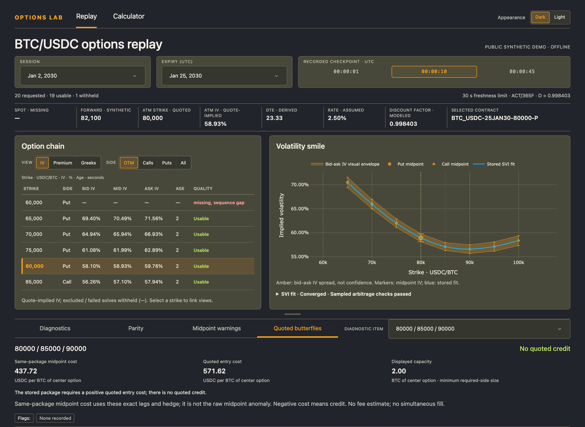

QUANTITATIVE FINANCE / NUMERICAL SOFTWARE
Options Lab
The Quantitative Pricing Toolkit pairs typed pricing and risk with historical Deribit BTC/USDC options research. Options Lab makes reconstructed bid/ask books and model diagnostics inspectable in a local replay workspace.

A midpoint is not a trade.
A pricing formula cannot establish whether a quote was available, correctly normalized, or usable on both sides. I built the numerical core, replay adapters, quality reports, and dashboard around those distinctions—not exchange marks treated as truth.
Black–Scholes–Merton prices European spot options with continuous dividends. Black-76 instead takes a forward and discount factor: historical linear BTC/USDC research uses the matching dated future’s fresh best bid/offer (BBO) midpoint, ACT/365F maturity, and an explicit rate assumption. Missing spot stays missing.
Reconstruct first. Infer second.
Typed, immutable market contracts separate models, replay, calibration, risk, and UI. Pricing never depends on Dash. Tardis supplies historical captures: its receipt clock records vendor observation, distinct from venue event time and file download time. Replay respects both clocks; broken sequence links invalidate affected books until a fresh snapshot. Prior-day catalog selection freezes strikes before inspecting option quotes.
Native prices, sizes, clocks, and flags survive normalization. Linear premiums are USDC per BTC; option quantities are contracts, futures quantities BTC. Missing, stale, crossed, or sequence-invalid observations remain inspectable but are withheld from dependent calculations—not replaced by older quotes.
Calibration quality and provenance
Bid, premium-midpoint, and ask IV are solved separately. SVI (Stochastic Volatility Inspired) models smile total variance by log-moneyness. Liquidity-weighted fits use eligible OTM midpoint observations, retaining rejections and residuals. Raw midpoint findings and fitted finite-grid strike, butterfly, and calendar checks remain separate; neither is a global arbitrage-free guarantee. Replay methodology ↗
Conventions are part of the result.
Safeguarded IV inversion validates no-arbitrage bounds, brackets volatility, accepts safe Newton steps, and otherwise bisects. Scale-aware residuals and stopping reasons expose low-Vega uncertainty. Stable tails and explicit expiry/zero-volatility conventions protect boundary arithmetic.
Delta, Gamma, Vega, calendar Theta, and Rho carry units: Vega/Rho are per unit volatility/rate; Theta is per year. Forward risk is not spot risk. Portfolio aggregation applies signed quantities and multipliers, separates currencies, and supports scenario repricing, P&L attribution, and limits.
Independent exercise reference
A separate CRR binomial tree checks European convergence and American exercise with grid-aligned, escrowed cash dividends. It does not extend analytic BSM’s assumptions. Exercise diagnostics are risk-neutral model outputs, not assignment forecasts. Model and risk decisions ↗
One selection, linked evidence.
Select session, expiry, and recorded checkpoint—not continuous playback. Chain IV/Premium/Greeks views and observed smile points link to contract detail, timestamps, solver diagnostics, and risk units. Put–call parity compares the bid/ask interval [call bid − put ask, call ask − put bid] with discounted (F − K), the forward-minus-strike value, using independent dated-future context—not a tradable midpoint. Midpoint warnings and quoted butterflies remain separate diagnostics.
CSV/JSON exports scope to the visible chain, IV observations, fitted slice, selected contract, or selected diagnostic, retaining cutoff and provenance. Selection does not refit the surface. The manual calculator remains separate; configured private reports never silently fall back to synthetic data.
The useful result was negative.
Historical Deribit BTC/USDC options—not the screenshot: upstream reports 53 midpoint findings but zero negative quoted entry costs across 168 repeated triplet observations. Four short Tardis recordings from August–November 2026 first-of-month sessions, two expiries, and three checkpoints per day produced 24 expiry fits. These are repeated checks, not independent trials, filled trades, or proof of no arbitrage.
The scan buys wings at asks, sells centers at bids, handles unequal spacing and call/put substitutions, and crosses the future’s spread for its hedge. Missing legs reduce coverage. Costs exclude fees, slippage, latency, and simultaneous-fill uncertainty. Historical sample findings ↗
Numerical regressions and performance evidence
Regressions cover reference prices, finite-difference Greeks, parity, bounds, scale-invariant IV, and causal late-arrival/gap recovery. Python 3.10/3.13 CI runs tests, Ruff, strict mypy, and distribution builds with locked dependencies.
The reported reference benchmark prices 10,000 heterogeneous calls: 2.072 seconds scalar versus 1.644 milliseconds batched, about 1,261× on CPython 3.13.5/NumPy 2.5.1. Both validate inputs and compare correctness before timing. This amortizes Python overhead; it is not dashboard latency or a portable speed guarantee.
Research, not execution.
Options Lab is local, read-only, and offline: no live quotes, orders, or authenticated multi-user hosting. Portfolio risk is implemented; complete hedging and strategy simulators remain roadmap work. Model sensitivities do not establish returns. The browser lab below is a smaller JavaScript reimplementation, not hosted Options Lab.